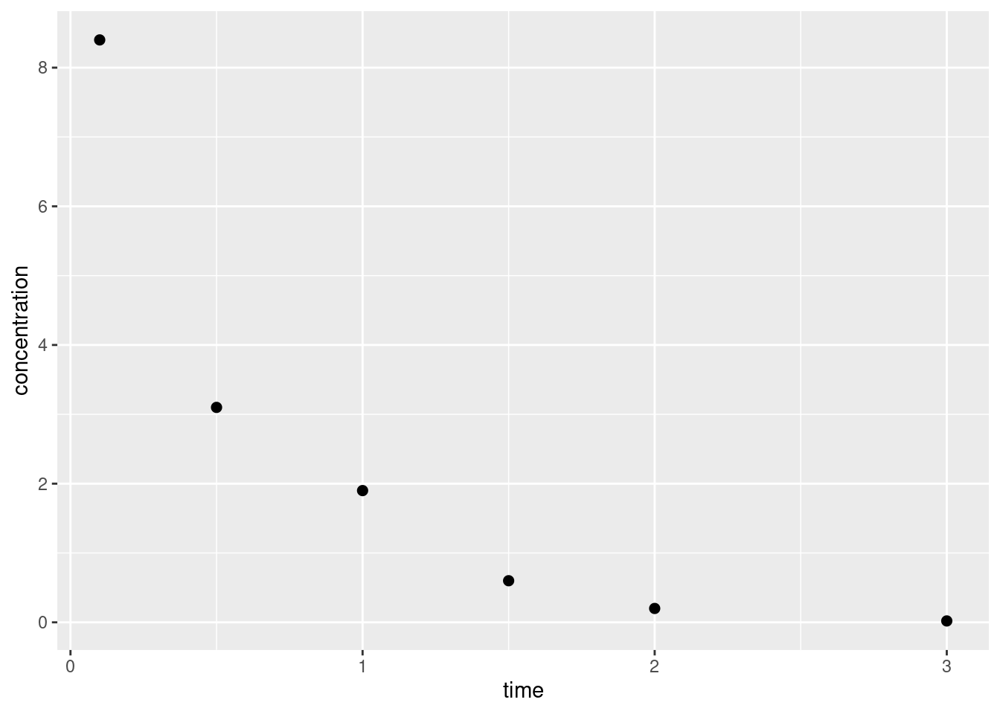
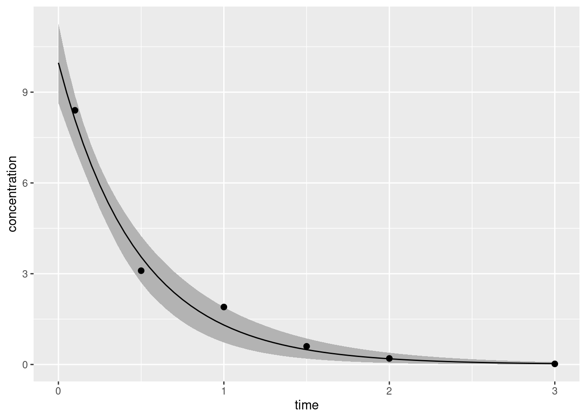
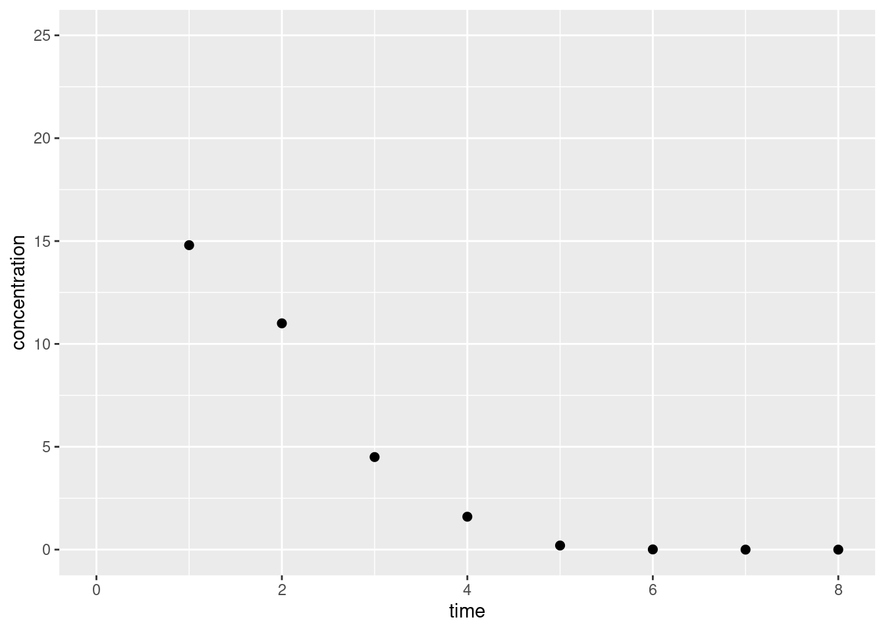
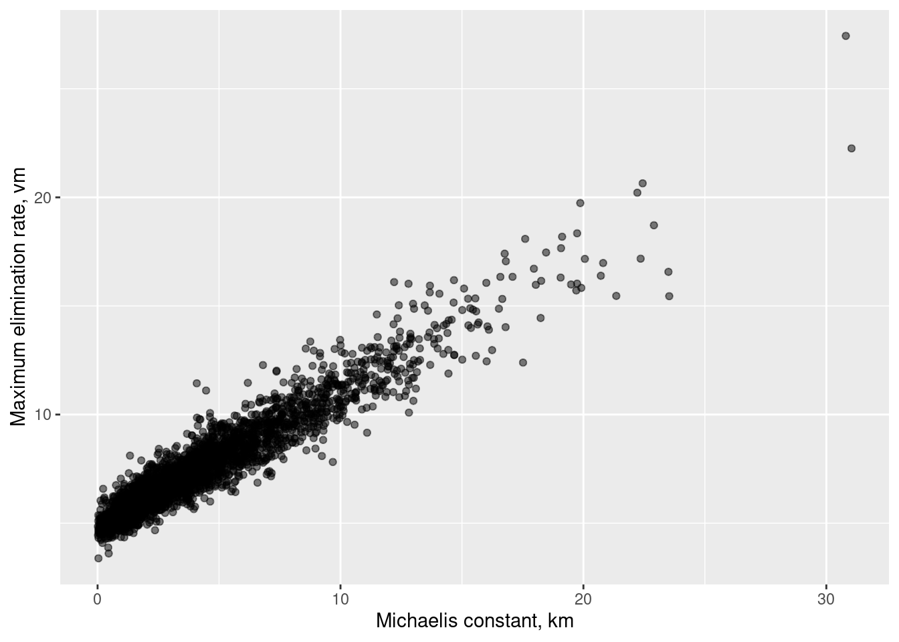
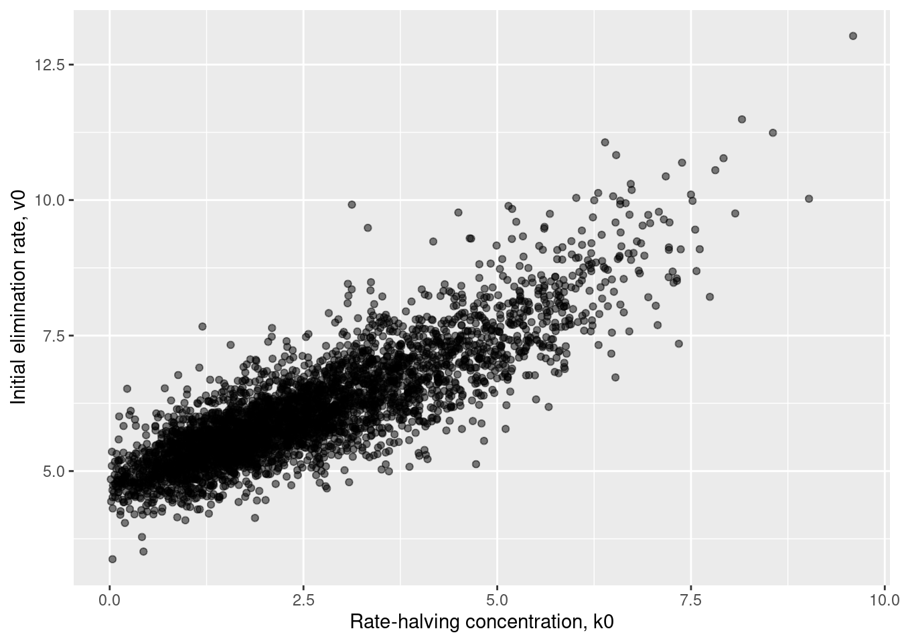
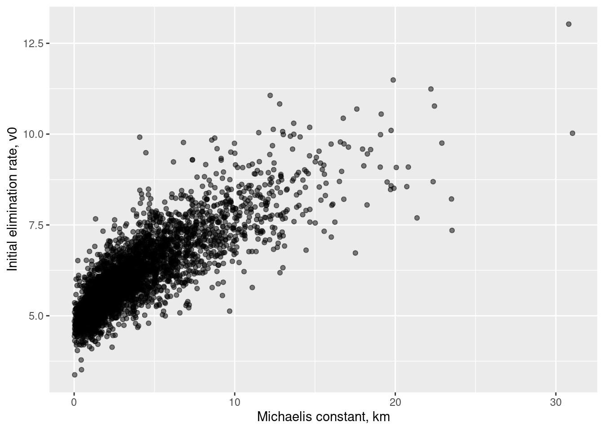
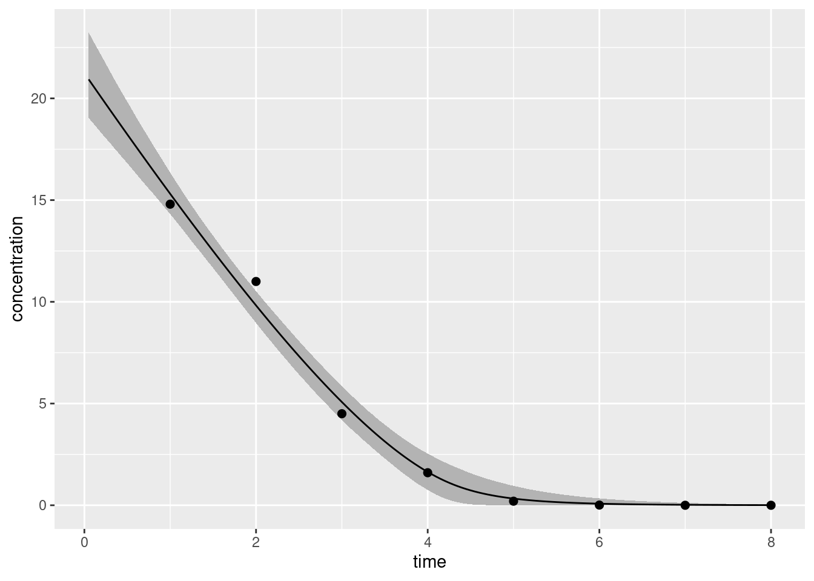

![]()
library(cmdstanr)This is cmdstanr version 0.5.3- CmdStanR documentation and vignettes: mc-stan.org/cmdstanr- CmdStan path: /home/danielle/.cmdstan/cmdstan-2.32.1- CmdStan version: 2.32.1May 11, 2023
For someone who has spent most of her professional life as a Bayesian statistician, it’s strange to admit that I’m only moderately experienced with Stan. My early work in Bayesian modelling involved some Laplace approximations to Bayes factors, MCMC samplers for posterior sampling, and in a few cases I would even resort to using BIC. I hand-coded everything myself, which was super helpful for understanding the mechanics underpinning the statistical inference, but terribly inefficient. When I did start using a domain-specific language for my probabilistic inference I mostly used JAGS.1 Eventually I started hearing the whispers…
“Have you heard the good news about Hamiltonian Monte Carlo?” the Stan believers would ask me.
With some regret I would have to reply that I was saddled with latent discrete parameters for theoretical reasons,2 and because the Stan stans are in fact lovely humans they would all express their sympathies, offer their thoughts and prayers, and think to themselves “there but for the grace of God go I”.
Long story short, it’s taken me a long time to be in a position to make the most of Stan. I’ve used it and enjoyed it but not really had the opportunity to dive in properly. In recent weeks, however, I’ve been talking with some lovely folks who work in pharmacometrics, and they have problems that are very well suited to this kind of modelling. Excellent… a pretext!
The first thing I have to do is go through the installation process. Yes, I have used Stan before, but that was a few laptops ago and things have changed a little since then. One happy little development from my perspective is that R users now have multiple options for interacting with Stan. The last time I used Stan the accepted method was to use the RStan package,3 and… there’s absolutely nothing wrong with RStan. It’s a great package. Really. It’s just… there’s a lot going on there, you know? Lots of bells and whistles. It’s powerful. It makes my head hurt.
Also, I can’t get the bloody thing to install on my Ubuntu box. Fucked if I know why.
Fortunately, nowadays there is also CmdStanR, a lightweight interface to Stan. It suits my style of thinking nicely because it provides R6 classes with methods that interact more or less directly with Stan. It does mean that you have to work harder to finesse the outputs, but I’m okay with that.4 As is usually the case with the Stan folks, the documentation is really nice so I won’t bother talking about the installation process. Suffice to say I’ve got the package working, so now I’ll load it:
This is cmdstanr version 0.5.3- CmdStanR documentation and vignettes: mc-stan.org/cmdstanr- CmdStan path: /home/danielle/.cmdstan/cmdstan-2.32.1- CmdStan version: 2.32.1The only finicky thing to talk about here lies in the fact that I’m doing all this in the context of a quarto blog post, and specifically a post that is using the knitr engine to execute the code chunks. By default, if knitr encounters a code chunk tagged as the stan language it will look for the RStan package to do the work.5 That’s not going to work for me since I don’t actually have RStan installed on my machine. Thankfully the cmdstanr package makes this easy for me to fix:
Now that this is done, quarto/knitr will use cmdstanr to handle all the stan code included below.
Next, I need a toy problem to work with. In my last post I’d started teaching myself some pharmacokinetic modelling – statistical analysis of drug concentrations over time – and I’ll continue that line of thinking here. In that post I wrote about noncompartmental analysis (NCA), a method for analysing pharmacokinetic data without making strong assumptions about the dynamics underpinning the biological processes of drug absorption and elimination, or the statistical properties of the measurement. NCA has its uses, but often it helps to have a model with a little structure to it.
In compartmental modelling, the analyst adopts a simplified model of (the relevant aspects of) the body as comprised of a number of distinct “compartments” that the drug can flow between. A two-compartment model might suppose that in addition to a “central” compartment that comprises systemic circulation, there is also a “peripheral” compartment where drug concentrations accrue in other bodily tissues. The model would thus include some assumptions about the dynamics that describe how the drug is absorbed (from whatever delivery mechanism is used) into (probably) the central compartment, and how it is eliminated from (probably) the central compartment. It would also need dynamics to describe how the drug moves from the central to peripheral compartment, and vice versa. These assumptions form the structural component of the compartmental model.
In addition to all this, a compartmental model needs to make statistical assumptions. The structure of the model describes how drug concentrations change over time, but in addition to that we might need a model that describes measurement error, variation among individuals, and covariates that affect the processes.
In other words, it’s really cool.
Okay let’s start super simple. We’ll have a one-compartment model, and we’ll assume bolus intravenous administration.6 That’s convenient because we don’t have to have a model for the absorption process: at time zero the entire dose goes straight into systemic circulation. Assuming we know both the dose \(D\) in milligrams and the volume of distribution7 \(V_d\), then the drug concentration in the first (and only) compartment \(C(t)\) at time \(t=0\) is given by \(C(0) = D/V_d\). That’s the only thing we need to consider on the absorption (or “influx”) side.
On the elimination (or “efflux”) side, there are a number of possible dynamical models we could consider. One of the simplest models assumes that the body is able to “clear” a fixed volume of blood of the drug per unit time. If this clearance rate is constant, some constant proportion \(k\) of the current drug concentration will be eliminated during each such time interval. Expressed as a differential equation this gives us:
\[ \frac{dC(t)}{dt} = - k\ C(t) \] Unlike many differential equations, this one is easy to solve8 and yields an exponential concentration-time curve:
\[ C(t) = C(0) \ e^{-kt} \]
That completes the structural side to our model. Now the statistical side. Again, we’ll keep it simple: I’m going to assume independent and identically normally distributed errors, no matter how unlikely that is in real life. Reflecting the fact that from a statistics point of view we’re now talking about a discrete set of time points and discrete set of measured drug concentrations, I’ll refer to the \(n\) time points as \(t_1, t_2, \ldots, t_n\) and the corresponding observed concentrations as \(c_1, c_2, \ldots, c_n\). In this notation our statistical model is expressed:
\[ c_i = c_0 \ e^{-kt_i} + \epsilon_i \]
where
\[ \epsilon_i \sim \mbox{Normal}(0, \sigma) \]
Our model therefore has two unknowns, the scale parameter \(\sigma\) and the elimination rate parameter \(k\). Since we are being Bayesians for the purposes of this post I’ll place some priors over these parameters. However, since we are also being lazy Bayesians for the purposes of this post I’m not even going to pretend I’ve thought much about these priors. I’ve made them up because my actual goal here is to familiarise myself with the mechanics of pharmacokinetic modelling in Stan. The real world practicalities – critically important though they are – can wait!
Anyway, here’s the priors I used:
\[ \begin{array}{rcl} \sigma & \sim & \mbox{Half-Normal}_+(0, 1) \\ k & \sim & \mbox{Half-Normal}_+(0, 5) \end{array} \]
Again, I cannot stress this enough: I literally did not think at all about these choices. Never ever adopt such an appalling practice in real life, boys and girls and enby kids!
It’s almost time to move onto the implementation but first… I kind of lied. There’s a third unknown. The initial concentration \(c_0\) is technically an unknown as well. True, we usually know the dosage to a high degree of precision (if I administer 50μg of a drug, there’s not much error there…), but the volume of the volume of systemic distribution is likely an estimate based on the assumption that blood volume is about 7-8% of body mass. I might guess that this value is about 5.5l but it might be a little more or a little less than that. Allowing the model to have a prior over the true value of \(v_d\) makes some intuitive sense and also has the nice consequence of allowing the model to infer the value of \(c_0\) from the data. In practice we’re not likely to be far wrong in guessing this quantity, so I’ve used the following prior:
\[ v_d \sim \mbox{Normal}(5.5, 1) \]
where 5.5l is my prior estimate.
Moving along, let’s have a look at how this model would be implemented in Stan. The code for the model is shown below, and – in case you’re not familiar with Stan code – I’ll quickly outline the structure. Stan is a declarative language, not an imperative one: you specify the model, it takes care of the inference. Your code is an abstract description of the model, not a sequence of instructions. In my code below, you can see it’s organised into three blocks:
Anyway here it is:
bolus
data {
int<lower=1> n_obs;
real<lower=0> dose;
real<lower=0> vol_d;
vector[n_obs] t_obs;
vector<lower=0>[n_obs] c_obs;
}
parameters {
real<lower=0.01> sigma;
real<lower=0.01> k;
real<lower=1, upper=12> vol_d_true;
}
model {
k ~ normal(0, 5) T[0.01, ];
sigma ~ normal(0, 1) T[0.01, ];
vol_d_true ~ normal(vol_d, 1);
c_obs ~ normal(dose / vol_d_true * exp(-k * t_obs), sigma);
}Some additional things to note:
int and real scalar types, and vector types containing multiple reals.Perhaps more important from the perspective of this post, here’s the important bit of quarto syntax I used when defining the code chunk above. When I defined the code chunk I specified the output.var option by including the following line in the yaml header to the chunk:
By specifying output.var: "bolus" I’ve ensured that when the quarto document is rendered there is a model object called bolus available in the R session. It’s essentially equivalent to having the code above saved to a file called bolus.stan and then calling the cmdstanr function cmdstan_model() to compile it to C++ with the assistance of Stan:
For future Stan models I’ll just print the name of the output variable at the top of the code chunk so that you can tell which R variable corresponds to which Stan model.
In any case let’s take a look at our bolus object. Printing the object yields sensible, if not exciting, output: it shows you the source code for the underlying model:
data {
int<lower=1> n_obs;
real<lower=0> dose;
real<lower=0> vol_d;
vector[n_obs] t_obs;
vector<lower=0>[n_obs] c_obs;
}
parameters {
real<lower=0.01> sigma;
real<lower=0.01> k;
real<lower=1, upper=12> vol_d_true;
}
model {
k ~ normal(0, 5) T[0.01, ];
sigma ~ normal(0, 1) T[0.01, ];
vol_d_true ~ normal(vol_d, 1);
c_obs ~ normal(dose / vol_d_true * exp(-k * t_obs), sigma);
}Perhaps more helpfully for our purposes, it’s useful to know that this is an object of class CmdStanModel, and if you take a look at the documentation on the linked page, you’ll find a description of the methods available for such objects. There are quite a few possibilities, but a few of particular interest from a statistical perspective are:9
$sample() calls the posterior sampling method implemented by Stan on the model$variational() calls the variational Bayes algorithms implemented by Stan on the model$optimize() estimates the posterior modeFor the purposes of this post I’ll use the $sample() method, and in order to call it on my bolus object I’ll need to specify some data to pass from R to the compiled Stan model. These are passed as a list:
To quickly visualise these “observed data”, I’ll organise the relevant variables into a data frame and draw a pretty little scatterplot with ggplot2:
library(ggplot2)
df <- data.frame(
time = bolus_data$t_obs,
conc = bolus_data$c_obs
)
ggplot(df, aes(time, conc)) +
geom_point(size = 2) +
labs(x = "time", y = "concentration")
Delightful, truly. So neat. So clean. So obviously, obviously fictitious.
As a Bayesian10 that has observed the data, what I want to compute is the joint posterior distribution over my parameters \(k\) and \(\sigma\). Or, since this has been an unrealistic expectation ever since the death of the cult of conjugacy,11 what I’ll settle for are samples from that joint posterior that I can use to numerically estimate whatever it is that I’m interested in. To do this for our bolus model with the help of cmdstanr, we call bolus$sample():
Running MCMC with 4 sequential chains...
Chain 1 Iteration: 1 / 2000 [ 0%] (Warmup)
Chain 1 Iteration: 1000 / 2000 [ 50%] (Warmup)
Chain 1 Iteration: 1001 / 2000 [ 50%] (Sampling)
Chain 1 Iteration: 2000 / 2000 [100%] (Sampling)
Chain 1 finished in 0.0 seconds.
Chain 2 Iteration: 1 / 2000 [ 0%] (Warmup)
Chain 2 Iteration: 1000 / 2000 [ 50%] (Warmup)
Chain 2 Iteration: 1001 / 2000 [ 50%] (Sampling)
Chain 2 Iteration: 2000 / 2000 [100%] (Sampling)
Chain 2 finished in 0.0 seconds.
Chain 3 Iteration: 1 / 2000 [ 0%] (Warmup)
Chain 3 Iteration: 1000 / 2000 [ 50%] (Warmup)
Chain 3 Iteration: 1001 / 2000 [ 50%] (Sampling)
Chain 3 Iteration: 2000 / 2000 [100%] (Sampling)
Chain 3 finished in 0.0 seconds.
Chain 4 Iteration: 1 / 2000 [ 0%] (Warmup)
Chain 4 Iteration: 1000 / 2000 [ 50%] (Warmup)
Chain 4 Iteration: 1001 / 2000 [ 50%] (Sampling)
Chain 4 Iteration: 2000 / 2000 [100%] (Sampling)
Chain 4 finished in 0.0 seconds.
All 4 chains finished successfully.
Mean chain execution time: 0.0 seconds.
Total execution time: 0.7 seconds.This is an object of class CmdStanMCMC and again you can look at the linked page to see what methods are defined for it. I’ll keep things simple for now and call the $summary() method, which returns a tibble containing summary statistics associated with the MCMC chains:
# A tibble: 4 × 10
variable mean median sd mad q5 q95 rhat ess_bulk ess_tail
<chr> <num> <num> <num> <num> <num> <num> <num> <num> <num>
1 lp__ 3.25 3.61 1.49 1.30 0.346 4.94 1.00 1244. 1507.
2 sigma 0.556 0.499 0.240 0.185 0.289 1.02 1.00 1453. 1870.
3 k 2.09 2.04 0.371 0.277 1.60 2.71 1.00 1709. 1712.
4 vol_d_true 5.04 5.01 0.414 0.369 4.42 5.76 1.00 1795. 1994.Evidently the estimated posterior mean for the elimination rate \(k\) is 1.79, with a 90% credible interval12 13 of [1.43, 2.19]. Similarly, the standard deviation of the measurement error \(\sigma\) is estimated to have mean 0.635 and 90% interval [0.34, 1.15].
If we wanted to we could take this a little further by pulling out the posterior samples themselves using the $draws() method. Internally this method relies on the posterior package, and supports any of the output formats allowed by that package. In this case I’ll have it return a tibble because I like tibbles:
# A draws_df: 1000 iterations, 4 chains, and 4 variables
lp__ sigma k vol_d_true
1 1.893 0.74 2.8 4.3
2 2.083 0.81 2.7 4.5
3 2.517 0.67 2.7 4.5
4 2.543 0.69 2.7 4.4
5 3.122 0.62 2.5 4.5
6 2.434 0.52 2.8 4.6
7 0.073 1.27 2.8 4.5
8 1.257 0.36 1.6 5.8
9 1.392 0.35 1.7 5.8
10 3.846 0.37 1.8 5.4
# ... with 3990 more draws
# ... hidden reserved variables {'.chain', '.iteration', '.draw'}You could then go on to do whatever you like with these samples but I have other fish to fry so I’m going to move on.
The model I built in the previous section is perfectly fine, as far as it goes, but it’s missing something that matters a lot to me. There’s nothing in the code that allows me to use the inferred model parameters to make predictions about the shape of the concentration-time curve across the full range of times. To do that I’ll introduce a “generated quantities” block to my code, as shown below:
bolus2
data {
int<lower=1> n_obs;
int<lower=1> n_fit;
real<lower=0> dose;
real<lower=0> vol_d;
vector[n_obs] t_obs;
vector<lower=0>[n_obs] c_obs;
vector[n_fit] t_fit;
}
parameters {
real<lower=0.01> sigma;
real<lower=0.01> k;
real<lower=1, upper=12> vol_d_true;
}
model {
k ~ normal(0, 5) T[0.01, ];
sigma ~ normal(0, 1) T[0.01, ];
vol_d_true ~ normal(vol_d, 1);
c_obs ~ normal(dose / vol_d_true * exp(-k * t_obs), sigma);
}
generated quantities {
vector<lower=0>[n_fit] c_fit = dose / vol_d_true * exp(-k * t_fit);
}When I do this, the data that I pass to this version of the model needs to be modified too. It needs to specify the times for which we want to generate fitted curves:
Now that we have an augmented model and augmented data set, we can re-run our sampling procedure using the new code:
Running MCMC with 4 sequential chains...
Chain 1 Iteration: 1 / 2000 [ 0%] (Warmup)
Chain 1 Iteration: 1000 / 2000 [ 50%] (Warmup)
Chain 1 Iteration: 1001 / 2000 [ 50%] (Sampling)
Chain 1 Iteration: 2000 / 2000 [100%] (Sampling)
Chain 1 finished in 0.0 seconds.
Chain 2 Iteration: 1 / 2000 [ 0%] (Warmup)
Chain 2 Iteration: 1000 / 2000 [ 50%] (Warmup)
Chain 2 Iteration: 1001 / 2000 [ 50%] (Sampling)
Chain 2 Iteration: 2000 / 2000 [100%] (Sampling)
Chain 2 finished in 0.1 seconds.
Chain 3 Iteration: 1 / 2000 [ 0%] (Warmup)
Chain 3 Iteration: 1000 / 2000 [ 50%] (Warmup)
Chain 3 Iteration: 1001 / 2000 [ 50%] (Sampling)
Chain 3 Iteration: 2000 / 2000 [100%] (Sampling)
Chain 3 finished in 0.0 seconds.
Chain 4 Iteration: 1 / 2000 [ 0%] (Warmup)
Chain 4 Iteration: 1000 / 2000 [ 50%] (Warmup)
Chain 4 Iteration: 1001 / 2000 [ 50%] (Sampling)
Chain 4 Iteration: 2000 / 2000 [100%] (Sampling)
Chain 4 finished in 0.1 seconds.
All 4 chains finished successfully.
Mean chain execution time: 0.1 seconds.
Total execution time: 0.5 seconds.Warning: 3 of 4000 (0.0%) transitions ended with a divergence.
See https://mc-stan.org/misc/warnings for details.The bolus2_fitted object contains both the parameter values sampled during the MCMC routine, and the generated quantities that emerged in the process. If I wanted to I could use those generated quantities as is. However, because there’s some value in separating the “posterior prediction” process from the “posterior sampling” process, it’s generally considered best practice to create a new set of generated quantities sampled using the posterior parameter distribution. We can do that by calling the $generate_quantities() method of our fitted model object:
bolus2_generated <- bolus2$generate_quantities(
fitted_params = bolus2_fitted,
data = bolus2_data,
seed = 666
)Running standalone generated quantities after 4 MCMC chains, 1 chain at a time ...
Chain 1 finished in 0.0 seconds.
Chain 2 finished in 0.0 seconds.
Chain 3 finished in 0.0 seconds.
Chain 4 finished in 0.0 seconds.
All 4 chains finished successfully.
Mean chain execution time: 0.0 seconds.
Total execution time: 0.5 seconds.This is a CmdStanGQ object, and again it has $draws() and $summary() methods. For our purposes the $summary() method will suffice as it returns a tibble containing the thing I want to plot:
# A tibble: 61 × 7
variable mean median sd mad q5 q95
<chr> <num> <num> <num> <num> <num> <num>
1 c_fit[1] 9.97 9.99 0.804 0.684 8.64 11.3
2 c_fit[2] 8.98 9.01 0.648 0.560 7.88 9.97
3 c_fit[3] 8.09 8.13 0.551 0.473 7.14 8.89
4 c_fit[4] 7.29 7.34 0.500 0.404 6.46 7.99
5 c_fit[5] 6.57 6.62 0.480 0.363 5.79 7.22
6 c_fit[6] 5.93 5.98 0.478 0.345 5.14 6.55
7 c_fit[7] 5.35 5.40 0.482 0.351 4.56 5.98
8 c_fit[8] 4.83 4.88 0.488 0.361 4.01 5.48
9 c_fit[9] 4.36 4.41 0.493 0.370 3.52 5.02
10 c_fit[10] 3.94 3.98 0.494 0.378 3.10 4.61
# ℹ 51 more rowsThe variable column here is only mildly helpful, so I’ll add a column specifying the actual times associated with each row in this tibble:
# A tibble: 61 × 8
variable mean median sd mad q5 q95 time
<chr> <num> <num> <num> <num> <num> <num> <num>
1 c_fit[1] 9.97 9.99 0.804 0.684 8.64 11.3 0
2 c_fit[2] 8.98 9.01 0.648 0.560 7.88 9.97 0.05
3 c_fit[3] 8.09 8.13 0.551 0.473 7.14 8.89 0.1
4 c_fit[4] 7.29 7.34 0.500 0.404 6.46 7.99 0.15
5 c_fit[5] 6.57 6.62 0.480 0.363 5.79 7.22 0.2
6 c_fit[6] 5.93 5.98 0.478 0.345 5.14 6.55 0.25
7 c_fit[7] 5.35 5.40 0.482 0.351 4.56 5.98 0.3
8 c_fit[8] 4.83 4.88 0.488 0.361 4.01 5.48 0.35
9 c_fit[9] 4.36 4.41 0.493 0.370 3.52 5.02 0.4
10 c_fit[10] 3.94 3.98 0.494 0.378 3.10 4.61 0.45
# ℹ 51 more rowsHaving done so I can now draw the plot I really want:
dat <- data.frame(t_obs = bolus2_data$t_obs, c_obs = bolus2_data$c_obs)
ggplot(bolus2_summary) +
geom_ribbon(aes(time, ymin = q5, ymax = q95), fill = "grey70") +
geom_line(aes(time, mean)) +
geom_point(aes(t_obs, c_obs), data = dat, size = 2) +
labs(x = "time", y = "concentration")
The solid line gives our best point estimate of the true concentration-time curve, and the shaded region shows a 90% credible interval that expresses our uncertainty about what part of the space the true curve might actually occupy.14
Earlier when I justified the use of an exponential concentration-time function \(C(t)\), I did so by assuming that the body is able to “clear” a constant volume of blood per unit time. That assumption works reasonably well in some situations. If we suppose that the kidneys15 work a bit like a filter, you can imagine that the body is filtering the blood at a fixed rate, which produces the exponential curve I used earlier. But the real world is a little more complicated than that sometimes.
Suppose, instead, that the elimination process involves an enzyme-catalysed reaction. That is, the body eliminates the drug (the substrate) by binding it to enzyme, and from this transition state it is catalysed to something else (the product). The dynamics of such a process are a little different: the enzyme concentration is often very low relative to the substrate concentration and the reaction rate saturates: once you’ve hit that point adding more of the drug into the blood won’t speed up the elimination rate because there’s no free enzyme to catalyse its conversion. Put slightly differently, if elimination involves a saturable process it won’t necessarily have a constant clearance rate, and you won’t see an exponential concentration-time function.
Well, that’s awkward.
Sometimes a process like this can instead be described by Michaelis-Menten kinetics, characterised by the following differential equation:
\[ \frac{dC(t)}{dt} = - \frac{v_{m}}{k_m + C(t)} C(t)\]
In this expression, \(v_{m}\) is a constant that denoting the maximum velocity of elimination: due to the limitations imposed by the enzyme concentration, the drug concentration cannot decrease faster than this rate. The term \(k_m\) is the Michaelis constant: when the drug concentration \(C(t)\) equals \(k_m\), the elimination rate \(dC(t)/dt\) is exactly half its maximum rate, \(v_{m} / 2\). Both of these properties are easy enough to demonstrate if you’re willing to spend a few minutes playing around with the equation above, but it’s not very interesting, so we’ll move on. A more useful approach is to think about how we should expect Michaelis-Menten kinetics to behave at high and low drug concentrations:
If the drug concentration \(C(t)\) is very large, \(dC(t)/dt\) will be roughly constant and very close to the satuation rate \(V_m\). In other words… at high concentrations, the concentration decreases linearly over time.
If the drug concentration \(C(t)\) is very small, then \(V_m / (K_m + C(t))\) will be roughly constant, and \(dC(t)/dt\) will be roughly proportional to the concentration \(C(t)\). In other words… at low concentrations the concentration decreases exponentially over time.
Now that we have a sensible intuition, we should try to draw the actual curves. One teeny-tiny problem… this differential equation doesn’t really have an analytic solution.16 We’re going to have to do this numerically.
In a moment I’m going to implement Michaelis-Menten kinetics using Stan, so as to eventually give me the ability to do Bayesian statistics in a pharmacokinetic model that involves this kind of dynamics. However, I’m a big fan of doing things in small steps. For example, if I weren’t planning to build all this into a probabilistic model, I wouldn’t really need to use Stan at all. R has many different tools for solving differential equations numerically, and I could just use one of those.
For instance, if I chose to use the deSolve package, I’d begin by defining an R function mmk() that returns the value of the derivative at a given point in time and given specified parameters, pass it to the ode() solver supplied by deSolve, and then draw myself a pretty little picture using ggplot2:
library(deSolve)
library(ggplot2)
# differential equation for MM kinetics: it returns a list because
# that's what ode() expects to receive when it calls this function
mmk <- function(t, y, parms) {
dydt <- - y * parms["vm"] / (parms["km"] + y)
return(list(dydt))
}
# parameters
dose <- 120 # (in milligrams)
circulation_vol <- 5.5 # (in litres)
max_elimination <- 8
halving_point <- 4
times <- seq(0, 8, .05) # (in hours)
# use the desolve package
out <- ode(
y = c("conc" = dose/circulation_vol),
times = times,
func = mmk,
parms = c(
"vm" = max_elimination,
"km" = halving_point
)
)
# convert matrix to tibble and plot
out <- as.data.frame(out)
ggplot(out, aes(time, conc)) +
geom_line() +
labs(x = "time", y = "concentration")Consistent with the intuitions we developed earlier you can see that on the left hand side this curve looks pretty linear, but on the right hand side it looks pretty much like an exponential decay.
Having solved the relevant differential equation in R, it’s helpful – if slightly strange – to imagine solving the exact same problem using Stan. Although Stan is primarily a language for probabilistic inference, it does provide a toolkit for solving differential equations. In normal usage we’d use the Stan ODE solver in the context of a larger statistical model, but – in order to wrap my head around how it works – I found it helpful to try invoking the solver for a dynamical system without incorporating it into any statistical model.
So let’s do that for Michaelis-Menten kinetics. If we squint and ignore the details, the basic idea is the same in Stan as it was in the earlier example in R:
Write a user-defined function called mmk() that takes arguments for the time, current state of the system (in our case concentration), and any other parameters (the maximum elimination rate and the Michaelis constant), and returns the derivatives.
Call the ODE solver function, in this case ode_rk45(), passing it the user-defined function and other required quantities. This being Stan, we’ll need to ensure those quantities are defined in the data block.
The actual code is shown below. The function is defined within the functions code block (shocking, right?), input data defined within the data block, and the variable we’re trying to compute (conc) is defined as a generated quantity:
mmk
functions {
vector mmk(real time,
vector state,
real vm,
real km) {
vector[1] derivative;
derivative[1] = - state[1] * vm / (km + state[1]);
return derivative;
}
}
data {
int<lower=1> nt;
vector[1] c0;
real t0;
array[nt] real ts;
real vm;
real km;
}
model {
}
generated quantities {
array[nt] vector[1] conc = ode_rk45(mmk, c0, t0, ts, vm, km);
}It may seem strange that the mmk() function defines the state variable to be a vector of length 1. At first pass it might seem a lot simpler to specify a scalar real: if we did that, then we wouldn’t have the weirdness of defining conc as a one-dimensional length nt array, in which each cell is a vector of length 1, each of which contains a single real number. The layers of nesting seem… unnecessary.
However, they are necessary.
To see this, it’s important to recognise that mmk() isn’t an arbitrary user defined function, it is the ODE system function and is designed to be passed to one of the solvers, in this case ode_rk45(). In this particular case our state is one-dimensional: we have a one-compartment model, and the only variable that defines the state is the drug concentration in that compartment. But dynamical systems can be – and usually are – multivariate: in a two-compartment model the state would probably be defined in terms of two drug concentrations, one for each compartment. In that case we would require a vector.
To accommodate this cleanly, the design choice made in Stan is that the second argument to the system function must be a vector, even if the state happens to be one-dimensional. More generally, the point I’m making here is that to call the ODE solvers you need to ensure that your system function has the appropriate signature.
In any case, let’s take our code for a spin. First we’ll create some data that we can pass to Stan:
Next, we “sample” from the “model”. This step is, admittedly, super weird. We don’t actually have a model, and there are no parameters to sample and there are no probabilistic aspects to the system at all. This is going to be the world’s shortest MCMC run. The Stan model above is available in R via the mmk object, so I’ll call its $sample() method, specifying fixed_param = TRUE so that Stan doesn’t try to resample parameters that don’t exist. I’m only going to run one “chain” for a single iteration, because I only need to solve the system once:
Running MCMC with 1 chain...
Chain 1 Iteration: 1 / 1 [100%] (Sampling)
Chain 1 finished in 0.0 seconds.Because Stan has dutifully generated the generated quantities, I now have the values for the solved concentrations. I’ll extract those by calling the $draws() method, do a tiny bit of cleanup to wrangle the data into a nice format…
mmk_draws <- mmk_fitted$draws(format = "draws_df")
mmk_draws <- mmk_draws |>
tidyr::pivot_longer(
cols = tidyr::starts_with("conc"),
names_to = "variable",
values_to = "conc"
) |>
dplyr::mutate(time = mmk_data$ts)Warning: Dropping 'draws_df' class as required metadata was removed.# A tibble: 160 × 6
.chain .iteration .draw variable conc time
<int> <int> <int> <chr> <dbl> <dbl>
1 1 1 1 conc[1,1] 21.5 0.05
2 1 1 1 conc[2,1] 21.1 0.1
3 1 1 1 conc[3,1] 20.8 0.15
4 1 1 1 conc[4,1] 20.5 0.2
5 1 1 1 conc[5,1] 20.1 0.25
6 1 1 1 conc[6,1] 19.8 0.3
7 1 1 1 conc[7,1] 19.5 0.35
8 1 1 1 conc[8,1] 19.1 0.4
9 1 1 1 conc[9,1] 18.8 0.45
10 1 1 1 conc[10,1] 18.5 0.5
# ℹ 150 more rows…and draw a pretty picture:
Yup, same as before.
Some preliminaries. For the purposes of building priors it’s useful to think about what kinds of properties you can have sensible intuitions about. It’s a little tricky to set a joint prior over the maximum elimination rate \(v_m\) and the Michaelis constant \(k_m\) without using some outside knowledge. If the data don’t span a range that lets you unambiguously discover “a linear bit” and “an exponential bit” it’s very easy to trade off one parameter against the other. Increasing \(v_m\) and \(k_m\) at the same time will slightly change the “bendiness” of the curve, but that’s easily absorbed into the error terms. In other words, if you don’t have sensible constraints you’re going to end up with a serious identifiability problem. With that in mind, the two thoughts I had are:
I can see why it might be important to understand \(v_m\) and \(k_m\) theoretically but from a data analysis perspective, it’s a little easier to set priors by thinking about the elimination rate \(v_0\) at time \(t = 0\). After a little high school algebra we obtain the following expressions to transform from \(v_0\) to \(v_m\) and vice versa:
\[ \begin{array}{rcl} v_0 &=& v_m \ \frac{c_0}{c_0 + k_m} \\ v_m &=& v_0 \ \frac{c_0 + k_m}{c_0} \end{array} \]
Extending this logic, instead of parameterising the prior in terms of the Michaelis constant \(k_m\) (the concentration at which the reaction rate falls to half its maximum value), we can use a design-specific analog, \(k_0\), denoting the concentration at which the reaction rate falls to half of \(v_0\). Again, some algebraic shenanigans gives us the transformations:
\[ \begin{array}{rcl} k_0 &=& \frac{c_0 \ k_m}{c_0 + 2 k_m} \\ k_m &=& \frac{c_0 \ k_0}{c_0 - 2 k_0} \end{array} \]
In a sign that I still haven’t really nailed this, the way I’m going to set my priors for the model is kind of unprincipled. I’ll set independent priors over the initial rate \(v_0\), and the Michaelis constant \(k_m\). I suppose I could make a pretense of a justification for this, by saying that the prior over \(v_0\) is used to capture my intutions about the experimental design and the prior over \(k_m\) is used to capture my intuitions about the fundamental biological processes as they exist outside the experiment but… yeah, that’s 100% a post hoc rationalisation. The actual reason I’m doing this is that I tried several different ways of setting a prior, and this version seemed to be the least vulnerable to numerical problems. Other versions tended to move into regions of the space where the ODE solver becomes very unhappy, or regions where the target probability density is not well-behaved. Practicality rules my world.
The specific prior:
\[ \begin{array}{rcl} v_0 & \sim & \mbox{Half-Normal}_+(0, 10) \\ k_m & \sim & \mbox{Half-Normal}_+(0, 10) \end{array} \]
Later, when I plot model posteriors, I’ll be a little more sensible though and use the two interpretable versions: I’ll plot \(v_m\) against \(k_m\), and \(v_0\) against \(k_0\).
Here’s the Stan code for the model I settled on:17
mmk_bolus
functions {
vector mmk(real time,
vector state,
real vm,
real km) {
vector[1] derivative;
derivative[1] = - state[1] * vm / (km + state[1]);
return derivative;
}
}
data {
int<lower=1> n_obs;
int<lower=1> n_fit;
vector<lower=0>[n_obs] c_obs;
array[n_obs] real t_obs;
array[n_fit] real t_fit;
real<lower=0> vol_d;
real<lower=0> dose;
real t0;
}
parameters {
real<lower=0.01> sigma;
real<lower=0.01, upper=30> v0;
real<lower=0.01, upper=50> km;
real<lower=1, upper=12> vol_d_true;
}
transformed parameters {
vector[1] c0;
c0[1] = dose / vol_d_true;
real<lower=0.01> vm = v0 * (km + c0[1]) / c0[1];
}
model {
array[n_obs] vector[1] mu_arr;
vector[n_obs] mu_vec;
v0 ~ normal(0, 10) T[0.01, ];
km ~ normal(0, 10) T[0.01, ];
sigma ~ normal(0, 1) T[0.01, ];
vol_d_true ~ normal(vol_d, 1);
mu_arr = ode_rk45(mmk, c0, t0, t_obs, vm, km);
for (i in 1:n_obs) {
mu_vec[i] = mu_arr[i, 1];
}
c_obs ~ normal(mu_vec, sigma);
}
generated quantities {
array[n_fit] vector[1] c_fit = ode_rk45(mmk, c0, t0, t_fit, vm, km);
real<lower=0.01> k0 = (c0[1] * km) / (c0[1] + 2*km);
}It’s truly thrilling, is it not? You’ll notice that I’ve introduced a “transformed parameters” block in which I’ve define the c0 and vm variables. These are included as transformed parameters because they are quantities that follow deterministically from the “stochastic” parameters (v0, km, etc) and the data, but – unlike the “generated quantities” – they actually do form part of the model because they are used later. The ODE solver needs access to both c0 and vm in order to calculate the model-predicted concentrations at each time point, so they aren’t purely auxiliary. In contrast, the c_fit and k0 variables that I’ve included in the “generated quantities” block aren’t used for anything: the human user (me) wants to know what these values are, but the model doesn’t strictly need them.
Anyway, let’s define some data that we can model:
And, because human beings typically prefer pretty pictures to tiresome lists of numbers, here’s a plot that shows you what the to-be-modelled data look like:
df <- data.frame(
time = mmk_bolus_data$t_obs,
conc = mmk_bolus_data$c_obs
)
ggplot(df, aes(time, conc)) +
geom_point(size = 2) +
lims(x = c(0, 8), y = c(0, 25)) +
labs(x = "time", y = "concentration")
I kind of like this as a toy data set because it’s (a) very clean, in the sense that it doesn’t feel noisy at all and we expect that the measurement error \(\sigma\) should be pretty small, and (b) there’s just a tiny bit of ambiguity about where precisely the MMK dynamics kick in… looking carefully at these points there’s this feeling that they aren’t really an exponential curve or a linear function, but something in between. So we should be able to model them using a MMK system, but it’s not quite clear where the linear part ends and where the exponential part begins. So it should be instructive…
Okay, so now let’s run the sampler:
mmk_bolus_fitted <- mmk_bolus$sample(
data = mmk_bolus_data,
seed = 100,
chains = 4,
parallel_chains = 2,
refresh = 1000
)Running MCMC with 4 chains, at most 2 in parallel...
Chain 1 Iteration: 1 / 2000 [ 0%] (Warmup)
Chain 2 Iteration: 1 / 2000 [ 0%] (Warmup)
Chain 1 Iteration: 1000 / 2000 [ 50%] (Warmup)
Chain 1 Iteration: 1001 / 2000 [ 50%] (Sampling)
Chain 2 Iteration: 1000 / 2000 [ 50%] (Warmup)
Chain 2 Iteration: 1001 / 2000 [ 50%] (Sampling)
Chain 1 Iteration: 2000 / 2000 [100%] (Sampling)
Chain 2 Iteration: 2000 / 2000 [100%] (Sampling)
Chain 1 finished in 2.0 seconds.
Chain 2 finished in 2.0 seconds.
Chain 3 Iteration: 1 / 2000 [ 0%] (Warmup)
Chain 4 Iteration: 1 / 2000 [ 0%] (Warmup)
Chain 3 Iteration: 1000 / 2000 [ 50%] (Warmup)
Chain 3 Iteration: 1001 / 2000 [ 50%] (Sampling)
Chain 4 Iteration: 1000 / 2000 [ 50%] (Warmup)
Chain 4 Iteration: 1001 / 2000 [ 50%] (Sampling)
Chain 3 Iteration: 2000 / 2000 [100%] (Sampling)
Chain 3 finished in 1.7 seconds.
Chain 4 Iteration: 2000 / 2000 [100%] (Sampling)
Chain 4 finished in 1.9 seconds.
All 4 chains finished successfully.
Mean chain execution time: 1.9 seconds.
Total execution time: 4.1 seconds.Warning: 2 of 4000 (0.0%) transitions ended with a divergence.
See https://mc-stan.org/misc/warnings for details.That looks nice. A couple of minor complaints from Stan about divergences, but nothing too serious.18 And take a summary:
# A tibble: 168 × 10
variable mean median sd mad q5 q95 rhat ess_bulk ess_tail
<chr> <num> <num> <num> <num> <num> <num> <num> <num> <num>
1 lp__ 3.82 4.20 1.73 1.49 0.506 5.86 1.00 1091. 1561.
2 sigma 0.717 0.673 0.247 0.216 0.416 1.18 1.00 1109. 1491.
3 v0 6.10 5.89 1.03 0.864 4.80 8.06 1.00 814. 1252.
4 km 3.80 2.79 3.34 2.19 0.586 10.6 1.00 906. 1442.
5 vol_d_true 5.67 5.69 0.350 0.329 5.08 6.22 1.00 924. 1398.
6 c0[1] 21.2 21.1 1.34 1.21 19.3 23.6 1.00 924. 1398.
7 vm 7.27 6.69 2.16 1.47 5.00 11.5 1.00 817. 1207.
8 c_fit[1,1] 20.9 20.8 1.30 1.17 19.0 23.2 1.00 934. 1413.
9 c_fit[2,1] 20.6 20.5 1.25 1.13 18.8 22.8 1.00 946. 1418.
10 c_fit[3,1] 20.3 20.2 1.21 1.10 18.5 22.5 1.00 958. 1423.
# ℹ 158 more rowsNeato.
Okay, let’s take a look at the posterior distributions. As I hinted earlier on – and indeed has been pointed out previously in the literature on Michaelis-Menten kinetics – there is a serious identifiability issue when parameters are expressed in the \((k_m, v_m)\) space:
mmk_bolus_draws <- mmk_bolus_fitted$draws(format = "draws_df")
ggplot(mmk_bolus_draws, aes(km, vm)) +
geom_point(alpha = .5) +
labs(x = "Michaelis constant, km", y = "Maximum elimination rate, vm")
The very high posterior correlation (the value is 0.9553735) between \(k_m\) and \(v_m\) makes it nigh-impossible to uniquely identify either one, and I am pretty sure this is also the reason why this particular model is very temperamental. Sure, it looks pretty well behaved in the output above (there are no warning messages and only two divergences reported), but that’s what it looks like after I reparameterised the model into a format that sorta kinda works. The version I implemented originally made Stan cry. A lot.
In case you’re interested, here’s what the joint posterior looks like in the \((k_0, v_0)\) space. There’s still some correlation there (the value is 0.8534392), but it has attenuated quite a bit:
ggplot(mmk_bolus_draws, aes(k0, v0)) +
geom_point(alpha = .5) +
labs(x = "Rate-halving concentration, k0", y = "Initial elimination rate, v0")
This is the real reason I introduced these transformations! Finally, let’s look at the posterior in the \((k_m, v_0)\) space in which I actually specified my priors:
ggplot(mmk_bolus_draws, aes(km, v0)) +
geom_point(alpha = .5) +
labs(x = "Michaelis constant, km", y = "Initial elimination rate, v0")
The correlation here is 0.8243216, pretty similar to the previous one.19
Okay, let’s turn to the curve itself. While there are some difficulties associated with recovering parameters of the Michaelis-Menten process, the concentration-time curves themselves are pretty recoverable. The plot below shows the posterior mean estimate of the curve, with the shaded region corresponding to the 90% equal-tail credible intervals for the concentration at each time point. For comparison purposes the observed data are overplotted:
mmk_bolus_generated <- mmk_bolus$generate_quantities(
fitted_params = mmk_bolus_fitted,
data = mmk_bolus_data,
seed = 999
)Running standalone generated quantities after 4 MCMC chains, 1 chain at a time ...
Chain 1 finished in 0.0 seconds.
Chain 2 finished in 0.0 seconds.
Chain 3 finished in 0.0 seconds.
Chain 4 finished in 0.0 seconds.
All 4 chains finished successfully.
Mean chain execution time: 0.0 seconds.
Total execution time: 1.3 seconds.mmk_bolus_generated_summary <- mmk_bolus_generated$summary() |>
dplyr::filter(variable |> stringr::str_detect("^c_fit"))
mmk_bolus_generated_summary$time <- mmk_bolus_data$t_fit
dat <- data.frame(
t_obs = mmk_bolus_data$t_obs,
c_obs = mmk_bolus_data$c_obs
)
ggplot(mmk_bolus_generated_summary) +
geom_ribbon(aes(time, ymin = q5, ymax = q95), fill = "grey70") +
geom_line(aes(time, mean)) +
geom_point(aes(t_obs, c_obs), data = dat, size = 2) +
labs(x = "time", y = "concentration")
Good enough! Naturally, there’s more I could do with this model, but that’s enough for this post so I’ll move on to something new.
Imagine a more complex situation where a drug is administered orally: we now have an influx process where the drug is absorbed from the gut into systemic circulation (the central compartment), from which it is later eliminated. However, if the drug is able to pass between the central compartment and other bodily tissues (the peripheral compartment), we’ll need to model the drug flow between them, since only the drug concentration present in the central compartment is available for potential elimination at any point in time. For the sake of my sanity I’ll assume that it’s just as easy for the drug to pass from central to peripheral as vice versa, so there’s only a single “intercompartmental clearance” parameter associated with this flow. I’m also going to assume that all three processes (absorption, elimination, intercompartmental transfer) involve first order dynamics only.
In this scenario the state \(\mathbf{c}_t = (c_{gt}, c_{ct}, c_{pt})\) at time \(t\) is defined by three concentrations:20
Strictly speaking, we have four rate parameters in our model:
In a moment, we’ll be able to rewrite this a little, but I find it helpful to start by writing out the system of differential equations in this notation first:
\[ \begin{array}{rcl} \frac{dc_g}{dt} &=& -k_a \ c_g \\ \frac{dc_c}{dt} &=& k_a \ c_g + k_{pc} \ c_p - k_{cp} \ c_c - k_e \ c_c \\ \frac{dc_p}{dt} &=& - k_{pc} \ c_p + k_{cp} \ c_c \end{array} \]
Written like this, the notation makes very clear that the gut can only lose drug to the central compartment, and the peripheral compartment can only exchange drug with the central compartment, but the central compartment has influx from gut, efflux to urine (or whatever), and interchange with the periphery. In other words, this notation makes the structure of the model clear.
What it doesn’t do terribly well, however, is make the biological assumptions explicit. There are structured relationships among \(k_{cp}\), \(k_{pc}\), and \(k_e\). To make these clear, we need to introduce some new notation. First, we can define two volumetric parameters:
Second, we can define two clearance parameters:21
Expressed in these terms we have the following structural relationships:
\[ \begin{array}{rcl} k_e &=& q_e / v_c \\ k_{cp} &=& q_i / v_c \\ k_{pc} &=& q_i / v_p \end{array} \]
So we can write the system of differential equations as follows:
\[ \begin{array}{rcl} \frac{dc_g}{dt} &=& -k_a \ c_g \\ \frac{dc_c}{dt} &=& k_a \ c_g + \frac{q_i}{v_p} \ c_p - \frac{q_i}{v_c} \ c_c - \frac{q_e}{v_c} \ c_c \\ \frac{dc_p}{dt} &=& - \frac{q_i}{v_p} \ c_p + \frac{q_i}{v_c} \ c_c \end{array} \]
Presumably you could take this a step further and express the absorption rate from the gut \(k_a\) in terms of a clearance rate and a gut volume, but it doesn’t seem like that adds anything useful since the gut doesn’t play any other role in this system, so even if you knew the gut volume precisely you’d still be trading one unknown parameter for another. The benefits to using this parameterisation seem to follow from the fact that the volumetric parameters \(v_c\) and \(v_p\) are things that you can have sensible prior intuitions about (especially \(v_c\) since that follows from blood volume, roughly) and that leads to a better model.
Righty-ho. Now that we’re clear on what our unknowns are, let’s specify some priors.
MORE OF MY BULLSHIT HERE
There are many topics that are adjacent to and highly relevant to this post that I have not discussed. The real reason for this is simply that I have limits, and this is just a blog post. But for the sake of listing some of them, here are a few issues around statistical inference that I omitted:
MCMC diagnostics: At various points in the process of writing this post Stan was kind enough to yell very loudly at me about the possibility that things might be going wrong with the MCMC sampler. Having “earned my bones” by writing some fucking terrible MCMC samplers of my own, I really appreciate the “fail loudly” aesthetic that Stan has going on. Indeed, the only reason that the models I’ve used here have ended up being… look, let’s call them “okay”, shall we?… is that every time something went awry Stan screamed at me.
Different kinds of ODE solvers: Throughout the post I’ve used ode_rk45() as my ODE solver in Stan, as if that were the only possible choice. It isn’t the only choice, and indeed it’s not even the only solver I used in the process of writing the bloody thing. There were periods in the post development where I couldn’t get the models to behave, and as a consequence of that the sampler kept proposing parameters that pushed the differential equations into a part of the space where they… aren’t pleasant. When that happened the system became “stiff”22 and I had to switch to using ode_bdf(). There is probably a whole blog post to be written about stiffness but… yeah nah. Suffice it to say this is one of those things where the mapmaker feels an urge to scribble “here be dragons” and move along.
Model checking, and Bayesian workflow more generally: Stating the obvious really, but at no point have I really dived into model checking, model testing, etc. There’s a huge amount that could be said on that. Not gonna say any of it here.
There are other things missing too. On the pharmacometric side, I have not discussed:
Finally, there are things I’ve missed on the software side. I’ve not talked about either Torsten or WinNonlin, and at some point I probably should. But… not today. This post is long enough already. I think we can all agree on that!
In my post-academic era I’ve gotten a little lax in my citation habits, but I still care about acknowledging my sources. In addition to the various Wikipedia pages and Stan documentation pages I’ve linked to throughout, this blog post draws heavily on ideas presented in these three papers:
Naturally, all the fuckups and errors are mine and mine alone.
I did try WinBUGS briefly but it was a bit awkward since I wasn’t a Windows user even then.↩︎
Yes, I know that sometimes there are tricks to work around them. It was more effort than it was worth.↩︎
There’s also many packages for specific modelling frameworks like brms and rstanarm but for the purposes of this post I’m only interested in packages that supply a general-purpose interface to Stan from R.↩︎
Please please please do not take any of this as a general purpose statement: I cordially dislike the “I am better than you because my code is closer to bare metal than yours” thing. Personally I think it’s kinda dickish behaviour. In this particular instance I find the lightweight interface helps me think, and I prefer it over all the convenience tooling provided by RStan because I need that clarity right now. Nothing more nor less than that is intended.↩︎
I mean, technically the real work of compiling the Stan code into an executable and then running the sampler is all being done by Stan itself and has sweet fuck all to do with any R package, but knitr has no way of talking to Stan, so it has to rely on an R package to do that… and by default it asks RStan.↩︎
Or, to those of us who don’t speak the language, the drug is injected into the bloodstream in a single dose.↩︎
Not quite the same as the total amount of blood plasma, as I understand it, but approximately the same idea.↩︎
So easy even I could do it.↩︎
I’m adopting the $method() convention here sometimes used when discussing R6 classes to be clear that we’re talking about encapsulated OOP in which methods belong to objects (as is typical in many programming languages) rather than functional OOP in which methods belong to generic functions (as appears in the S3 and S4 systems in R, for instance).↩︎
Note for young people: This was the pre-2023 equivalent of saying “As an AI language model…”↩︎
I can still remember quite viscerally the moment that conjugacy died for me as a potentially useful statistical guideline: it was the day I learned that a Dirichlet Process prior is conjugate to i.i.d. sampling from an arbitrary(ish) unknown distribution. DP priors are… well, I don’t want to say “worthless” because I try to see the good in things, but having worked with them a lot over the years I am yet to discover a situation where the thing I actually want is a Dirichlet Process. It’s one of those interesting inductive cases about the projectibility of different properties. What “should” have happened is that the DP-conjugacy property made me more willing to use the DP. Instead, what “actually” happened is that learning about DP-conjugacy made me less willing to trust conjugacy. I knew in my bones that the DP was useless, so I revised my belief about conjugacy. Someone really should come up with a formal language to describe this kind of belief revision… I imagine it would be quite handy.↩︎
This is “of course” (see next footnote) an equal-tailed interval rather than a highest density interval.↩︎
In technical writing, the term “of course” is an expression that used to denote “something that the author is painfully aware of and some subset of the readership is equally exhausted with, and none of those people really want to talk or hear about for the rest of their living days, but is entirely unknown and a source of total confusion to another subset of the readership who have no idea why this should be obvious because in truth it absolutely is not obvious”. As such it should, of course, be used with caution and with a healthy dose of self-deprecation and rolling-of-the-eyes. It is in this latter spirit that my use of the term is intended: I simply do not wish to devote any more of my life to thinking about the different kinds of credible intervals.↩︎
We could supplement it further and maybe add dotted lines even further out that show 90% credible regions for future data (i.e., acknowledging the role of measurement error in the future) but today I don’t feel like doing that!↩︎
And other organs, I guess. I’ve heard rumours the human body contains other organs that actually do things…↩︎
Apparently this is only half true. A deep dive on the relevant wikipedia page suggests that it is possible to solve it analytically, but insofar as the solution involves the Lambert W function I personally would prefer to take a numerical approach.↩︎
Folks familiar with Stan will probably notice that my code style could be improved a little. It’s probably not ideal that I’m enforcing the truncation range on some of my variables twice, once at variable declaration using the <lower, upper> syntax, and then sometimes later on by truncating a distribution using the T[L, U] syntax. At the moment I find this redundancy helpful to me because it stops me from getting confused (e.g., it means I never look at my own code and wonder why my half-normal is declared to have a normal() distribution), but in the long run I think it’s a bad idea for code maintenance. From that point of view I think it makes sense to have a consistent code style that declares variable bounds once and only once, in a place where future maintainers would expect to find it. That would make it a lot easier to edit later. But that’s the kind of detail I’m not going to worry about right this second.↩︎
Okay look, if this were linear regression I’d be very worried at seeing any divergences. But for this model? Babe, this is really fucking good. It took a lot of effort to find a parameterisation of the MMK elimination model that doesn’t end in nuclear fire, metaphorically speaking. One or two divergences in the MCMC chains, yeah, I can live with that.↩︎
Looking at that plot I had wondered if the correlation was being boosted by a few outliers, but that doesn’t seem to be the case: the rank-order correlation for the third plot is 0.8186489, which compares to 0.827474 for the previous plot, and 0.9336609 for the first one.↩︎
It should be noted that my notation is slightly nonstandard. My understanding is that the convention in the literature is to use notation consistent with the WinNonlin software package, as that is generally considered the industry standard and often used for benchmarking purposes. I haven’t done this for a very boring reason: I’ve not yet had a chance to play around with WinNonlin.↩︎
Yes, seriously. I know my notation is nonstandard. Hush. I’m still wrapping my head around it and I like having notation that makes clear that \(q_e\) and \(q_{cp}\) are both parameters of the same structural kind. I don’t find CL and Q anywhere near as easy to understand.↩︎
Too easy.↩︎
@online{navarro2023,
author = {Navarro, Danielle},
title = {An {ODE} by {Stan}},
date = {2023-05-11},
url = {https://blog.djnavarro.net/posts/2023-05-11_stan-ode},
langid = {en}
}